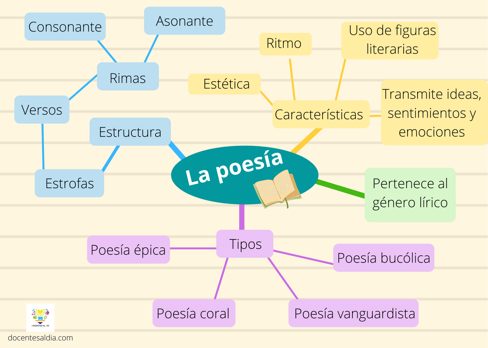

Enciclopedia
Mapas Mentales
Un mapa mental es una representación espontanea de pensamientos que se ramifican a partir de un concepto central. Hacer uso de ellos fomenta la tormenta de ideas, la toma de notas efectiva y una retención mayor de los conocimientos. Esto fue demostrado en diversos estudios, que llegaron a la conclusión de que se debe a el impacto visual que tienen los diagramas. Los mapas mentales pueden ser simples o elaborados y pueden dibujarse a mano o utilizando una computadora, además de poder incluir, imágenes, dibujos, múltiples colores, etc.
Aqui tenemos un ejemplo de un Mapa Mental:
Caracteristicas generales de un Mapa Mental:
- El tema principal debe estar ubicado en el centro del diagrama.
- Los conceptos relacionados se enlazan alrededor del principal
- Cada rama del tema principal se desarrolla independientemente de acuerdo con cada tema
Tecnica Pomodoro
Se trata de un método de gestión de tiempo que sugiere trabajar en intervalos de 25 minutos, sin interrupción ni distracciones, y añadir tiempos de descanso de 5 minutos. El objetivo es establecer metas y mejorar la productividad. Los intervalos de tiempo se denominan «pomodoros» y una vez cumplidos cuatro de ellos se pueden hacer pausas prolongadas de entre 15 a 30 minutos, siempre y cuando se hayan completado los primeros cuatro intervalos de trabajo consecutivos.
Metodo Cornell
Este método se basa en dividir una misma hoja de apuntes (idealmente de tamaño A4) en cuatro apartados diferenciados para poder condensar todo el temario y estudiar de forma productiva.